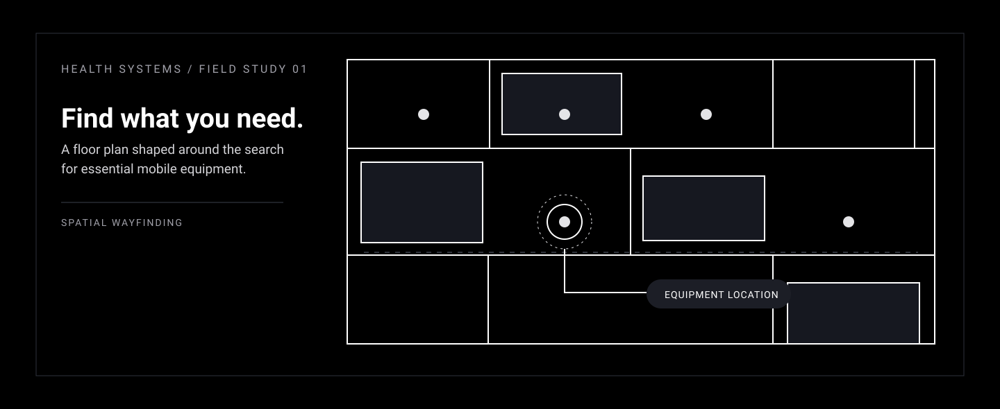

Concept / Study
Healthcare Logistics Concept Study
Predictive Ward Logistics Engine
An offline-first hospital telemetry prototype to locate critical infusion pumps in basement corridors without cloud reliance.
HL7 FHIR v4GS1-128IndexedDB
#01